League Of Legends (英雄联盟）
《英雄联盟》是由美国拳头游戏（Riot Games）开发、中国内地由腾讯游戏代理运营的英雄对战MOBA竞技网游。游戏里拥有数百个个性英雄，并拥有排位系统、符文系统等特色养成系统。 《英雄联盟》致力于推动全球电子竞技的发展，除了联动各赛区发展职业联赛、打造电竞体系之外，每年还会举办“英雄联盟季中冠军赛”“英雄联盟全球总决赛”“英雄联盟全明星赛”三大世界级赛事，形成了自己独有的电子竞技文化。 2018年5月14日，《英雄联盟》加入亚洲运动会，成为表演项目之一。 2019年9月17日，拳头游戏值《英雄联盟》十周年之际发布了其全新的LOGO，并公布每一天全世界都有超过八百万玩家同时在线，这意味着英雄联盟依然是全球玩家数最大的电脑游戏。
背景设定
符文之地与魔法
在符文之地，魔法就是一切。 在这里，魔法不只是一种神秘莫测的能量概念。它是实体化的物质，可以被引导、成形、塑造和操作。符文之地的魔法拥有自己的自然法则。源生态魔法随机变化的结果改变了科学法则。 符文之地有数块大陆，不过所有的生命都集中在最大魔法大陆——瓦洛兰。瓦洛兰大陆居于符文之地中心，是符文之地面积最大的大陆。 被祝福的符文之地上有大量源生态魔法能量，而此地居民可以触及其中的能量。 符文之地的中心区域集中了数量巨大的源生态魔法能量，这些地方都是水晶枢纽的理想位置。 水晶枢纽可以将源生能量塑形为自身实体化的存在。此外，水晶枢纽还可以成为能量车间，为需要魔法能量的建筑供能。 水晶枢纽遍布符文之地，但最大的水晶枢纽都坐落在瓦洛兰大陆。
艾欧尼亚
在凶险海域环绕中，诸多同盟省份在一片被称为“初生之土”的庞大群岛上组成了艾欧尼亚。 追寻万物的平衡是这里长久以来的文化基调，因此物质与精神领域之间的界限也在这里若有若无，在野外的森林和山脉中尤为如此。 虽然这片土地上的魔力可能变幻无常，栖息着的生物也可能危险而神奇，但在过去的几百年中，艾欧尼亚的居民一直过着富足的生活。 习武的僧院、各省的民兵团、甚至就连艾欧尼亚这片土地本身，都已经足够保护当地的居民。 但那一切都在十二年前结束了，因为那一年，诺克萨斯出兵攻打了“初生之土”。 一望无际的帝国大军在艾欧尼亚肆虐，艾欧尼亚人经过多年的苦战才以巨大的代价击败敌人。 如今的艾欧尼亚正处于脆弱的和平中。对于那场战争的不同应对，让这片土地产生了分裂——有一些团体，例如朔极的武僧和均衡教派， 想要回归与世隔绝的和平以及田园牧歌的传统。另一些比较激进的派系，例如纳沃利兄弟会和影流，则主张对这片土地的魔法进行军事化改造，建立一个统一的国家，强大到足以对诺克萨斯实施打击报复。 艾欧尼亚的命运正悬在微妙的平衡中，几乎无人愿意使其倒向任何一边，但所有人都能感到脚下的土地在蠢动不安
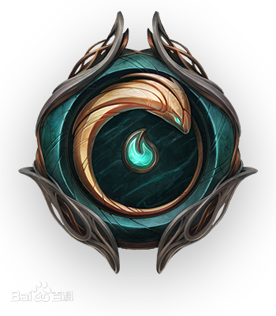德玛西亚
德玛西亚是一个法理至上的强大王国，战功赫赫，久负盛名。德玛西亚人自古崇尚正义、荣耀和责任，近乎狂热地以自身的传统及底蕴为豪。然而，尽管秉持着这些高尚的原则，在过去的几百年间，刚愎自用的德玛西亚越发与世隔绝，成为了孤立主义的代名词。 然而现在，王国中已经出现了变数。 德玛西亚雄都以禁魔石——一种可以抑制魔法能量的白色岩石——为基，起初是符文战争之后为了躲避魔法侵害的人们所建立的庇护地。王权由中心向外辐射，守护着边远的城镇、农田、森林和矿产丰饶的山脉。 然而，自从嘉文三世国王突然驾崩，各大家族至今仍未赞同他唯一的继承人嘉文王子继位。 在王国眼中，重兵把守的边境之外已经是异心遍起，许多原先的附庸在乱世来临之际开始寻求来自别处的庇护。有人私下妄言，德玛西亚的黄金时代已经一去不返，除非臣民能够上下一心，顺应时代的变化——许多人认为他们并没有这样的能力，否则王国的衰败在所难免。 再多的禁魔石，也无法阻止德玛西亚由内而外的覆灭。
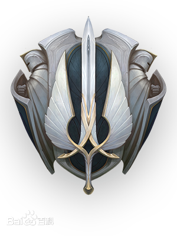诺克萨斯
诺克萨斯是一个威名震天的强大帝国。在诺克萨斯境外的人眼中，它拥兵自重、血腥野蛮、欲壑难填，但对于那些看透它好战外表的人来说，这里的社会氛围实际上超乎寻常地包容。 人民的所有特长和天赋都会得到尊重和受到培养的机会。 古代诺克西人是残暴的野蛮人部落联合，他们占领了一座古城，并将其建成了现在的帝国中心。当时的诺克萨斯面临着来自各方的威胁，所以他们与所有敌人都激烈交锋，睚眦必报，不胜不归，最终让帝国的版图连年扩张。 这一段艰难求生的历史让诺克萨斯人从骨子里感到骄傲自豪，也因此重视力量胜过一切。当然，力量可以通过许多不同的形式表现。 无论社会立场、身世背景、祖国故乡和个人财富如何，任何人都可能在诺克萨斯获得权力、地位、和尊敬，只要他们能够表现出必要的能力。 能够使用魔法的人会被高看一眼，帝国甚至会主动寻觅这类人，让他们的特殊天赋得到锻炼并最高效地为帝国所用。 虽然诺克萨斯有贤能统治的政治理想，但老一辈贵族家庭依然在帝国的心脏把持着相当大的权力，有人担心诺克萨斯最大的威胁并非来自敌人，而是来自内部。
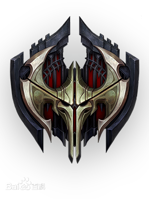祖安
祖安是一片庞大的地下城区，坐落在皮尔特沃夫周边蜿蜒的沟壑与峡谷之下。 交错层叠、腐蚀老化的排烟管网中泄露出各色烟尘，将上方射下来的光线过滤成诡异的颜色，在祖安工坊的有色玻璃之间交叉反射。 祖安和皮尔特沃夫曾经是联合统一的，但现在却分裂开来，各成一派。 虽然祖安一直都笼罩在雾霾遮蔽的暮色中，但这里的繁华热闹却不让分毫，这儿的居民包罗万象，文化异彩纷呈。 皮尔特沃夫的财富也带动了祖安的发展，让它成为了头顶那座城市的黑暗镜面。 许多运往皮尔特沃夫的商品最后都辗转流入了祖安的黑市，有些海克斯科技发明家可能会觉得地上之城给他们施加的限制太严格，他们中的许多人都会发现自己的危险研究在祖安颇受欢迎。 对于不稳定技术和鲁莽产业的放纵式开发，让整个祖安的大片地区都遭到污染，生存条件也变得越来越危险。 剧毒的废水淤积在城市的下游地区，但即使是在这里，人们依然能够设法生存并繁荣灿烂。
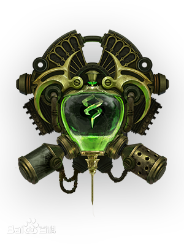皮尔特沃夫
皮尔特沃夫是一座繁荣进步的城市，自身实力与影响力都在冉冉崛起。 这里是瓦洛兰大陆的文化中心，艺术、工艺、贸易与创新携手并进。 它的实力并非来自军事力量，而是来自广泛的贸易合作和超前于时代的思维。 皮尔特沃夫坐落在毗邻祖安城区的悬崖之上，俯视着大海，一批批船队穿过它巨大的海湾峡口，满载着来自世界各地的商品。 海运贸易带来的财富曾经为城市的成长带来前所未有的推动作用，皮尔特沃夫曾经——而且一如既往地进行着革命创新，造就了一座财富与梦想之城。 初创商会资助了各项令人惊奇的新领域开发项目：宏大的艺术杂烩、冷门的海克斯科技研究，还有象征他们实力的纪念碑式建筑。 随着越来越多发明家如饥似渴地追寻着前沿的海克斯科技知识，皮尔特沃夫已经成为了吸引全世界能工巧匠的天然磁石。
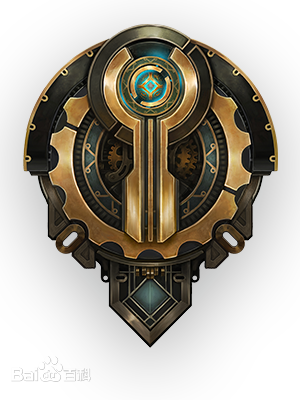弗雷尔卓德
弗雷尔卓德是一片环境恶劣、残酷无情的土地。这里的人们个个都是天生的武士，必须在绝境中谋求生存。 弗雷尔卓德境内的诸多部族都有强烈的自豪感和独立意识，在瓦洛兰大陆上与他们接壤的邻邦常常会认为他们野蛮、粗犷、未开化，但那是因为他们不了解他们承袭已久的远古传统。 数千年前，阿瓦罗萨、赛瑞尔达和丽桑卓三姐妹之间的同盟在一场战争中瓦解，这场战争让北地陷入混乱，进入了近乎永久的寒冬，甚至还曾不为人知地威胁了整个符文之地的存亡。 现在，只有那些真正出类拔萃的凡人，那些近乎无视火焰与寒冰侵袭的人，才可能拥有成为领袖的命运和能力。 虽然冰霜守卫部族极力掩盖，但关于旧时的神、神秘的雪人和躁动的兽灵行者萨满之类的种种神话传说依然流传了下来。凛冬之爪部族的劫掠者每一年都在扩张洗劫的范围，南至德玛西亚疆界、东至诺克萨斯边境。 最后，还有一些寻求和平但又坚持独立的部族开始汇聚于年轻的女王艾希身边，与她麾下的阿瓦罗萨人结盟。 即便如此，还是噩兆连连。战争即将再次降临弗雷尔卓德，没人能够逃脱。
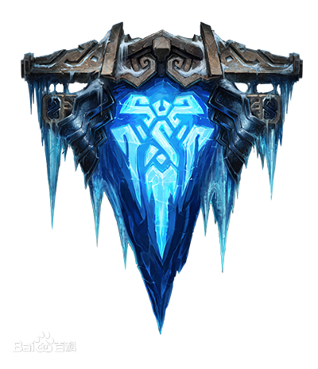恕瑞玛
恕瑞玛帝国曾经是一个繁荣昌盛的文明，统治着一整块大陆。由天神战士组成的飞升者大军所向无敌的，一手造就了这个帝国，让所有绝望的南方人团结起来，在他们之中贯彻了长久的和平。 几乎无人胆敢反抗。所有反叛者，比如被诅咒的国度艾卡西亚，都被无情地践踏了。 然而，经历了数千年的发展与繁荣后，恕瑞玛末代皇帝的飞升仪式以失败告终，导致整个帝国化为废墟，恕瑞玛的昔日荣光最后留下的也只有人们口中的神话。 如今，大多数生活在恕瑞玛沙漠的游牧居民都必须在这片无情的土地上寻找基本的生存物资。有些守在少数几片绿洲周围的小型哨站里，其余则潜入失落已久的墓穴，寻找那些不应被挖掘出来的无价之宝。 也有一些人当了佣兵，为了活命狗苟蝇营，最后葬身于荒蛮的大漠中，回归尘土。 但是，还是有少数人梦想着能重新再现昔日的盛景。这绝非无稽之谈，近来有许多部落都听到了从沙漠中心传出的风声——他们的皇帝，阿兹尔回来了，他要带领他们走向新的奇迹时代。
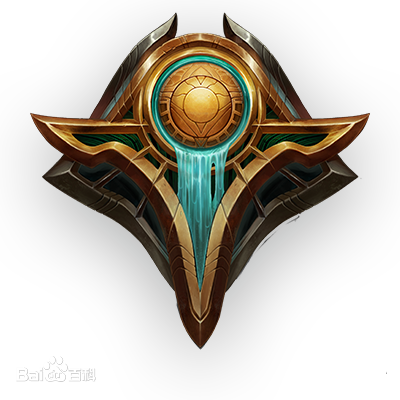巨神峰
巨神峰是符文之地的世界之巅，这座高耸入云的山峰完全由坚硬的山石构成，终年沐浴着烈日阳光，永远俯视着脚下的群山，恢弘磅礴举世无双。 巨神峰坐落于远离文明的无人之地，对于许多人都是遥不可及的，只有那些意志最坚决的追寻者有幸一睹尊容。 许多传奇故事都与巨神峰有关，并且，和其他神秘地区一样，巨神峰也是一座吸引着梦想家、疯人和冒险者的璀璨信标。 有些勇敢的人会尝试攀上这座绝顶高山，可能是为了寻找智慧和启迪，可能是为了追求荣耀或者灵魂深处某种会当凌绝顶的渴求。 登顶并非绝无可能，并且那些在登顶后存活下来的极少数人也几乎不会透露他们看到了什么。 有些回来的人眼中满是迷惑和空洞，而另一些则变得面目全非，被选为星灵，充满了一种超凡且非人的能量，并且被赋予了只有少数凡人才能理解的命运。
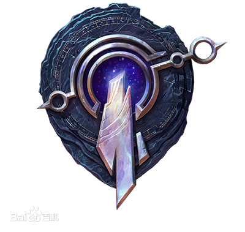比尔吉沃特
在远离大陆的蓝焰群岛边缘，坐落着独一无二的港城比尔吉沃特。 海蛇猎人、码头帮派和走私偷运者从已知世界的四面八方来到这里安家落户。 在这里，富可敌国或是家破人亡都只在转瞬之间。对于那些逃避审判、债务和迫害的人，这个城市能让他们重获新生，因为在比尔吉沃特的蜿蜒街路上，没人会在乎你的过去。 话虽如此，每当拂晓之际，粗心大意之人都会漂在港湾中，钱袋空空，喉头见血...... 虽然比尔吉沃特是极其危险的地方，但这里也充满了机遇，不受到任何正规政府和贸易监管的制约束缚。 无论是来路不正的海克斯科技，还是当地黑帮的俯首听命，只要你出得起钱，一概唾手可得。 近来，上一任“强盗之王”遭到罢黜，这座城正处于权力交接阶段，几位最显赫的船长正在共同商讨这座城市的未来何去何从。 但只要那些乘风破浪的帆船和水手们还留在这里，比尔吉沃特就依然是那个符文至地上最为色彩斑斓、四通八达的地方。
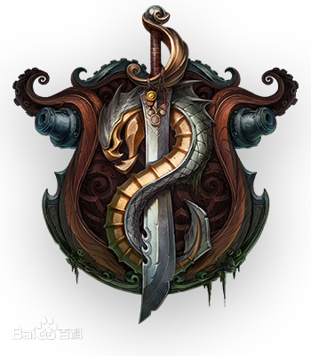暗影岛
这片被诅咒的土地原本养育着一个高贵、开悟的文明，它的盟友和使节将此处 称为福光岛。 然而，在一千多年前，一场前所未有的魔法灾难撕碎了物质与精神领域之间的屏障，让二者发生了融合效应……顷刻间就毁灭了所有生命。 如今，一团恶毒的黑雾永久地萦绕着这片群岛，就连土地本身也被恶毒的巫术污染。 任何凡人如果胆敢踏上这片凄凉的海岸，就会被渐渐偷走生命力，继而引来永不知足、猎食成性的死灵。 那些在黑雾中殒命的灵魂会遭受诅咒，永世栖息于这片噩梦般的土地。 更可怕的是，暗影岛的力量每一年都在逐渐变强，让最强大的幽灵在符文至地上侵扰得越来越远。
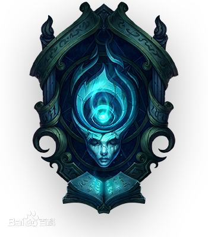班德尔城
约德尔人的故乡究竟在何处？对于这个问题人们众说纷纭，不过有一些凡人声称自己穿过了无形的传送门，进入了超越物质领域的奇异魔法世界。 他们都描述了一个魔法奔放的地方，鲁莽蛮横的人会被无数的奇观带入歧途，最后迷失在梦境中，永远无法返回…… 在班德尔城，任何约德尔人以外的种族都会感到自己的全部感官得到了强化。 城中所见无不色彩斑斓，食物与水的味道让人经年沉醉——只要尝过一次，就终身难忘。这里日光溶溶，春水不休，每一株植物都会结出累累硕果。 或许这些描述中有一部分属实，或许全都是假的——因为没有任何两个讲述者能够对所见所闻达成一致。 只有一件事可以肯定，那就是班德尔城和里面的居民都具有某种超脱时间的属性，这或许可以解释为什么从那里回来的凡人全都像是一夜苍老了许多年岁，更多人则根本是一去不复返。
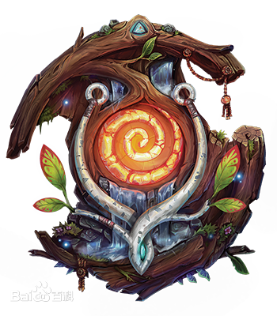